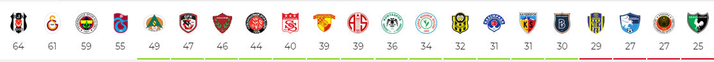
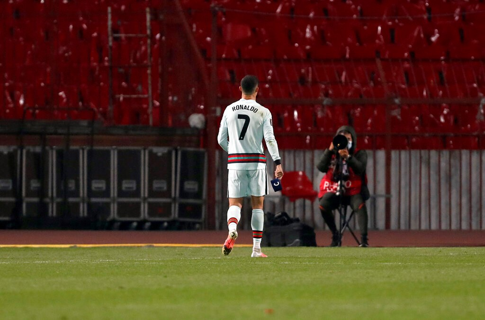
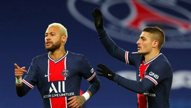
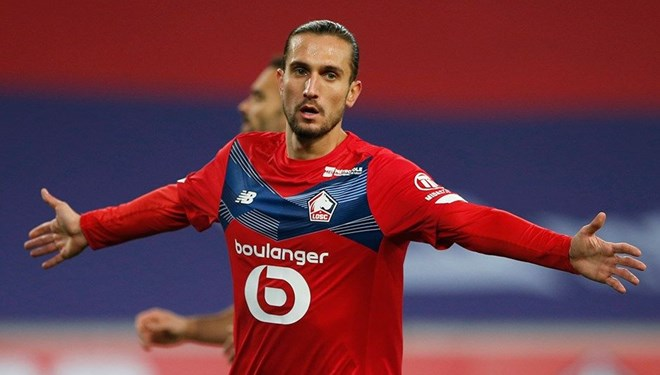
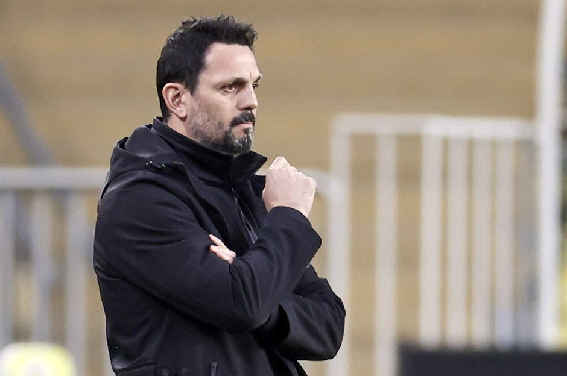
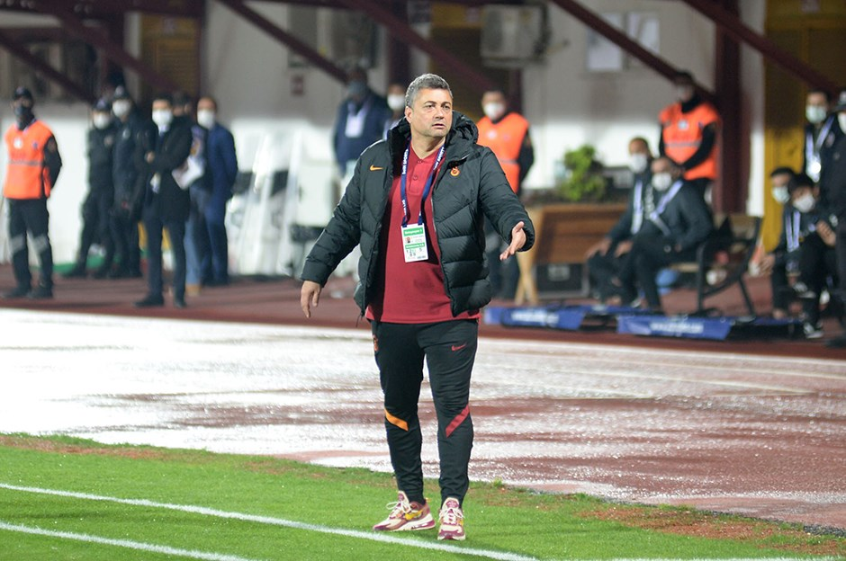
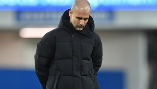

SUPER LIG FIKSTURU
Fikstür > 2020/2021

Gol kralı ya da kadınlar futbolundaki karşılığıyla gol kraliçesi, başta futbol olmak üzere topla oynanan takım sporu müsabakalarında atılan gollerin bir sezon boyunca sayılmasının, ardından birey adına toplanması ve sıralanmasıyla en üstte yer alan sportcuya verilen unvandır. Gol krallığını birden fazla futbolcu paylaşabilir.
Türkçede gol kralı olarak bilinen ve Türkiye Ligleri'nde bu terimle ifade edilen unvan diğer ülkelerde başka şekillerde kullanılır. Örneğin İspanya Ligi La Liga'da bir sezon içinde en çok gol atan futbolcu Pichichi Ödülü ile ödüllendirilir. Ayrıca tüm Avrupa Futbol Ligleri çapında ise "European Sports Magazines" adlı spor dergisi tarafından organize edilen Avrupa Altın Ayakkabı Ödülü vardır.


Cristiano Ronaldo'nun yere attığı kaptanlık pazubandı yaklaşık 64 bin euroya satıldı. 
PSG oyuncusu Veratti corona virüse yakalandı. 
Yusuf Yazıcı, corona virüse yakalandı. 
Erol Bulut ilk kez konuştu: "Böyle beklemiyordum" 
Levent Şahin: İzahı olmayan bir gece 
Guardiola yeni forvet peşinde!
Metin Oktay!
Uğruna adanmış hayatlar.

Şampiyonluk!
Gol Kralı, Gol kralı, anlam olarak futbol sporunda gerçekleştirilen her hangi bir turnuva da en fazla gol atan kişiye verilen unvandır. Bu turnuvalar genel olarak uzun bir süreçlerde ve bir çok defa en az iki takımın ve bir çok takımın oluşturduğu gruplarda karşılıklı olarak mücadele etmeleriyle sürer ve son olarak en iyi takım olabilmek ve turnuvanın sonucunda en iyi takımı ödüllendirmek için yapılır.

Usta!
Türkiye Süper Lig Gol Kralı; Türkiye süper lig gol kralları arasına bir çok isimler girmiştir. Fakat bazı isimlerin bir lig boyunca attığı gol sayısına ulaşmak ve kırdığı rekorları geçmek günümüzde pek kolay gibi görünmüyor. Türkiye süper lig gol krallığında bir ligde en fazla gol atan isim Tanju Çolak 'tır. Ayrıca Tanju Çolak 1987-1988 süper lig sezonunda toplamda 39 gol atarak şu anda bir ligde en fazla gol atan isimdir. Ayrıca Avrupa liglerinde sıralama o dönemler de bir çok liglerle kıyaslama yapılarak Avrupa da da en fazla gol atan isim olarak altın ayakkabı ödülünü almıştır. Tanju Çolak diğer gol kralları arasında bir diğer ayrıcalığı ise gol kralı olduğu sezonlar da farklı takım formaları altında ayrı ayrı gol kralı olma unvanına sahip tek futbolcudur. Bunun yanında süper ligde en çok gol kralı unvanı alan ve taçsız kral lakabı ile anılan Metin Oktay 'dır. Metin Oktay, gol kralı unvanını kariyeri boyunca toplamda 6. kez almıştır. İkinci sırada en çok gol kralı olan futbolcu ise 5 kez gol kralı olan Tanju Çolak yerini korumaktadır. Ardından 3. sırayı ise Hakan Şükür, Aykut Kocaman ve Cemil Turan kariyerleri boyunca toplamda 3 kez gol kralı olarak paylaşmaktadırlar.Devlet televizyonunda da gündem Norveç - Türkiye karşılaşmasıydı. NRK kanalı "Norveç'e gerçek bir ders" başlığını kullandığı haberde, Haaland'ın agresif Türk savunması arasında çok zorlandığına dikkati çekti.
Cristiano Ronaldo'nun yere attığı kaptanlık pazubandı yaklaşık 64 bin euroya satıldı.
PSG oyuncusu Veratti corona virüse yakalandı.
Yusuf Yazıcı, corona virüse yakalandı.
Erol Bulut ilk kez konuştu: "Böyle beklemiyordum"
Levent Şahin: İzahı olmayan bir gece
Guardiola yeni forvet peşinde!